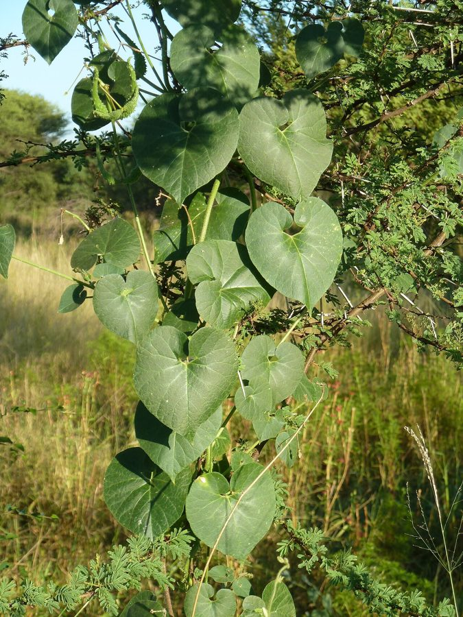

उतरनUtran
Pergularia daemia · Asclepiadaceae · FLR-0205

- Scientific name वैज्ञानिक नाम
- Pergularia daemia (Forssk.) Chiov.
- Family कुल
- Asclepiadaceae
- Hindi हिंदी
- उतरन
- Local names स्थानीय नाम
- utran, utaran, uttaran, trellis vine
- Status here यहाँ की स्थिति
- native
- Movement आवागमन
- Resident, here all year
- IUCN IUCN
- not evaluated
- Review समीक्षा
- audited and independently read
When to look कब देखें
Expected mainly in May, June, July, August, September, October, November. मुख्यतः मई, जून, जुलाई, अगस्त, सितंबर, अक्टूबर, नवंबर में अपेक्षित।
Uses and possibilities उपयोग और संभावनाएँ
“Traditional medicine” means a documented traditional use, not a claim that it works. Nothing on this page is medical advice.
Drawn from the documented uses in the profile below, where each is labelled traditional, current or a research lead. All uses →
Tell it apart from इनसे अलग पहचानें
उतरन / Utran
Pergularia daemia (Forssk.) Chiov. — Asclepiadaceae
उतरन (दुधेली, दुधली) — गर्मियों की बेल, जो खेत की मेड़ों और बाड़ों पर अपने आप उग आती है। तना पतला, हल्का-फुल्का, चढ़ता है। पत्तियाँ छोटी, दिल के आकार की, कोमल। फूल गुलाबी या सफेद, छोटे, सुगंधी, तारे जैसे। तोड़ने से दुधिया रस निकलता है (दुधेली या दुधली इसलिए कहते हैं)। फल दो लम्बी, पतली सींगों जैसी फलियों में बीज होते हैं। आयुर्वेद में पत्तियों का अर्क पेट दर्द और दस्त के लिए प्रयोग किया जाता है।
Quick Identification त्वरित पहचान
| Feature | Description |
|---|---|
| Stem | Slender, climbing/trailing, 1–3 m, smooth, green, latex-producing |
| Leaves | Cordate (heart-shaped), 3–8 cm, opposite, soft, pubescent |
| Flowers | Pink, white, or mauve, star-shaped, 1–1.5 cm, fragrant |
| Fruit | Paired follicles, 8–15 cm, horn-like, containing seeds with silky parachutes |
| Seeds | Flat, with apical silky hair-tuft (coma) for wind dispersal |
| Latex | Present in all tissues; white, milky, sweet-smelling |
| Habit | Climbing or trailing, weak, non-woody |
Field tip: A delicate climbing vine with heart-shaped leaves, star-shaped pink flowers, and distinctive paired horn-like fruits. The plant produces white latex when broken. Fragrant flowers. Very common on field margins and hedgerows during the warm season.
Morphology आकारिकी
| Measurement | Range |
|---|---|
| Vine length | 1–3 m |
| Leaf length | 3–8 cm |
| Leaf width | 2–7 cm |
| Flower diameter | 0.8–1.5 cm |
| Follicle length | 8–15 cm |
| Seed length | 8–12 mm |
Habit: Weak, herbaceous, climbing or trailing vine; 1–3 m long; stems smooth, glabrous or slightly pubescent, producing white latex when cut.
Leaves: Opposite, cordate (heart-shaped at base), 3–8 cm × 2–7 cm; apex acute to acuminate; both surfaces soft, slightly pubescent, with minute hairs; margin entire.
Flowers: Regular, star-shaped, pink, white, or mauve, 0.8–1.5 cm across, highly fragrant, borne in umbellate clusters (usually 4–10 flowers per cluster) from leaf axils; corolla 5-lobed, each lobe with reflexed margins; corona (inner ring of petal-like structures) prominent, composed of 5 scales; stamens 5, fused around the pistil; ovary superior.
Fruits: Follicles (paired), elongate, horn-like, 8–15 cm long, smooth or slightly warty, green, becoming yellowish-brown at maturity; each follicle opens along one suture at ripeness.
Seeds: Numerous, flat, oblong, 8–12 mm long, with a prominent apical tuft of silky hairs (coma) used for wind dispersal.
हिंदी: पतली बेल, दिल-जैसी पत्तियाँ। तारे जैसे गुलाबी फूल, खुशबूदार। सींगों जैसी फली। दुधिया रस। बीज में रेशमी बालों वाली पूँछ।
Behaviour & Ecology व्यवहार और पारिस्थितिकी
Pergularia daemia is a warm-season herbaceous climber native to tropical South Asia and Africa. The plant is a weak, non-woody climber that requires support from hedgerows, field margins, or other vegetation to reach full length. The plant is deciduous, growing rapidly during the warm monsoon season and dying back in winter.
The star-shaped, fragrant flowers are visited by bees, butterflies, and other pollinators in the early morning and evening. The paired horn-like fruits and wind-dispersed seeds with silky parachutes are characteristic of the Asclepiadaceae family.
The plant thrives in dry to semi-dry habitats and is often seen on degraded land and fallow fields where it provides nitrogen fixation potential. The production of latex throughout the plant tissues suggests chemical defenses against herbivory.
हिंदी: गर्मियों की बेल। सर्दी में मर जाती है। मधुमक्खियों को आकर्षित करते हैं। हवा से बीज फैलते हैं।
Life Cycle / Phenology जीवन चक्र
| Month | Event |
|---|---|
| April–May | Seed germinates with summer heat; seedling emergence |
| May–June | Rapid vegetative growth; vine elongation and leaf expansion |
| June–September | Flowering; star-shaped flowers produced continuously from leaf axils |
| July–October | Fruit development; follicles swell and mature |
| September–November | Seed maturation and dispersal; follicles open and release seeds |
| December onwards | Plant decline and death after first frost |
From germination to first flower: 6–8 weeks. Continuous flowering during the warm season if moisture is adequate.
हिंदी: अप्रैल-मई: बीज अंकुरण। मई-जून: तेज़ वृद्धि। जून-सितंबर: फूल। जुलाई-नवंबर: फल और बीज। सर्दी में मर जाता है।
Associated Species / Interactions संबंधित प्रजातियाँ
- Climbing support: Often found on Pointed Gourd trellises and other field structures
- Garden companions: Sometimes cultivated in kitchen gardens for medicinal use
- Pollinator support: Flowers attract bees and butterflies used for crop pollination
- Agroforestry: Used in some regions as a cover crop or green manure plant
Pests and Diseases कीट और रोग
- Generally hardy: No major pest or disease problems reported
- Leaf-eating insects: Occasionally affected by generalist leaf-eaters, but damage is usually minor
- Mildew: Rarely affected in humid conditions
Agricultural / Human Relevance कृषि प्रासंगिकता
Traditional medicine: Pergularia daemia is documented in Ayurvedic and folk medicine of South Asia. The leaf extract or decoction is traditionally used for treating:
- Abdominal pain and colic
- Diarrhoea and dysentery
- Fever and general malaise
- Skin conditions (leaf paste applied topically)
The plant is recorded in classical Ayurvedic texts as a cooling (shita) herb with digestive properties. Modern phytochemical studies confirm the presence of cardiac glycosides and other bioactive compounds.
Ecological role: As a nitrogen-fixing plant (Asclepiadaceae often associate with nitrogen-fixing bacteria), Pergularia daemia can improve soil fertility where it grows. The plant's leaf-fall adds organic matter to the soil.
Non-timber use: The milky latex is occasionally used in traditional dye-making or for gumming applications (not widely documented).
हिंदी: पेट दर्द और दस्त की पारंपरिक दवाई। पत्तियों का अर्क आयुर्वेद में प्रयोग। ठंडा (शीतल) माना जाता है।
Expected Locally स्थानीय रूप से अपेक्षित
Not a field record. Written from published accounts for eastern Uttar Pradesh. No confirmed local sighting yet — if you have seen it, that is what the atlas needs.
अभी तक स्थानीय पुष्टि नहीं। यह विवरण प्रकाशित स्रोतों से है, किसी अवलोकन से नहीं।
Pergularia daemia is expected to occur on field margins, hedgerows, and cultivated field edges in Basti district during the warm season (May to November). The fragrant star-shaped flowers and distinctive horn-like fruits should aid identification.
Distribution वितरण
Global range: Native to tropical Africa and Asia; distributed throughout tropical South Asia.
In India: Found throughout the Indo-Gangetic plain and other tropical regions.
In Uttar Pradesh: Common on field margins and in gardens throughout the state.
In Basti district / eastern UP: Expected as a common climber on field margins and hedgerows during the warm season.
Research Questions शोध प्रश्न
Anyone can investigate these | कोई भी इन प्रश्नों की जाँच कर सकता है
- How far do utran seeds disperse when released from mature follicles, and what is the germination rate? — Release seeds; measure dispersal distance; test germination.
- What is the traditional preparation of utran for treating abdominal pain, and is it still used in local villages? / उतरन से पेट दर्द की दवाई गाँव में कैसे बनाई जाती है? — Interview healers; document preparations.
- Which insects visit utran flowers, and for how long does each flower remain open? — Observe flowers; identify pollinators; time opening and closure.
- Does utran latex have antimicrobial properties when tested against common bacteria? — Collect latex; conduct simple antimicrobial tests.
- Can utran be grown as a cover crop on field margins, and does it improve soil nitrogen content? — Grow in test plots; measure soil nitrogen before and after.
Similar Species मिलती-जुलती प्रजातियाँ
| Species | How to tell apart | हिंदी |
|---|---|---|
| Balloon Vine (Cardiospermum halicacabum) | Leaves bipinnate (compound); fruits are inflated pods, not horn-like follicles | पंख-सरीखी पत्तियाँ, गुब्बारे जैसे फल |
| Asclepias curassavica (Butterfly Weed) | Orange flowers; narrower leaves; different fruit type | नारंगी फूल |
Field rule: A weak climbing vine with opposite heart-shaped leaves, star-shaped fragrant pink flowers, and paired horn-like fruits is utran.
Taxonomy & Classification वर्गीकरण
Original description. Originally described by Pehr Forsskål as Periploca daemia (1775), later transferred to Pergularia by Augusto Chiov. The genus name Pergularia is derived from the Latin pergula (arbour or trellis), referring to the climbing habit. The specific epithet daemia is from the Arabic/Persian name for the plant.
Subspecies. Monotypic — no subspecies are currently recognised.
Family and order placement. Asclepiadaceae (Milkweed family), order Gentianales. The family is known for latex production and wind-dispersed seeds with silky parachutes.
Phylogenetic notes. Pergularia daemia is closely related to other Old World Pergularia species and to the African P. extensa.
IUCN status rationale. Not evaluated. Widespread and stable; not assessed for conservation.
Photo Gallery फोटो गैलरी
Photos needed आवश्यक फोटो
- [ ] Vine with flowers and young fruits (बेल, फूल, छोटे फल)
- [ ] Star-shaped flowers in cluster (तारे जैसे फूल)
- [ ] Mature horn-like follicles (पकी फली, सींगें)
- [ ] Seeds with silky parachute (बीज, रेशमी पूँछ)
No photos yet — add field photos to media/species/utran/ and run node scripts/sync_photos.js.
References संदर्भ
- Forsskål, P. (1775). Flora Aegyptico-Arabica. Copenhagen.
- Chiov, T. (1932). Revision of the genus Pergularia Forsk. Annuario del Reale Istituto Botanico di Roma 11: 59–74.
- Hooker, J.D. (1884). Flora of British India, Vol. 4. L. Reeve & Co., London.
- Kirtikar, K.R. & Basu, B.D. (1935). Indian Medicinal Plants, Vol. 2. Lalit Mohan Basu, Allahabad.
- Botanical Survey of India. State Flora Series: Flora of Uttar Pradesh. BSI, Kolkata.
- GBIF Occurrence Data — Pergularia daemia, India (2024–2026).
Source file: species/flora/climbers/utran.md